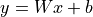
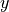
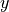
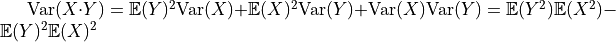
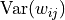
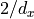
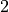
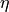
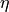
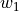

Initialization and Optimization¶
Author: Phillip Lippe
License: CC BY-SA
Generated: 2021-09-02T20:41:01.573900
In this tutorial, we will review techniques for optimization and initialization of neural networks. When increasing the depth of neural networks, there are various challenges we face. Most importantly, we need to have a stable gradient flow through the network, as otherwise, we might encounter vanishing or exploding gradients. This is why we will take a closer look at the following concepts: initialization and optimization. This notebook is part of a lecture series on Deep Learning at the University of Amsterdam. The full list of tutorials can be found at https://uvadlc-notebooks.rtfd.io.
Open in ![Open In Colab]()
Give us a ⭐ on Github | Check out the documentation | Join us on Slack
Setup¶
This notebook requires some packages besides pytorch-lightning.
[1]:
! pip install --quiet "seaborn" "pytorch-lightning>=1.3" "torchvision" "torch>=1.6, <1.9" "torchmetrics>=0.3" "matplotlib"
In the first half of the notebook, we will review different initialization techniques, and go step by step from the simplest initialization to methods that are nowadays used in very deep networks. In the second half, we focus on optimization comparing the optimizers SGD, SGD with Momentum, and Adam.
Let’s start with importing our standard libraries:
[2]:
import copy
import json
import math
import os
import urllib.request
from urllib.error import HTTPError
import matplotlib.pyplot as plt
import numpy as np
import pytorch_lightning as pl
import seaborn as sns
import torch
import torch.nn as nn
import torch.nn.functional as F
import torch.utils.data as data
%matplotlib inline
from IPython.display import set_matplotlib_formats
from matplotlib import cm
from torchvision import transforms
from torchvision.datasets import FashionMNIST
from tqdm.notebook import tqdm
set_matplotlib_formats("svg", "pdf") # For export
sns.set()
/tmp/ipykernel_1102/1682095326.py:24: DeprecationWarning: `set_matplotlib_formats` is deprecated since IPython 7.23, directly use `matplotlib_inline.backend_inline.set_matplotlib_formats()`
set_matplotlib_formats("svg", "pdf") # For export
Instead of the set_seed function as in Tutorial 3, we can use PyTorch Lightning’s build-in function pl.seed_everything. We will reuse the path variables DATASET_PATH and CHECKPOINT_PATH as in Tutorial 3. Adjust the paths if necessary.
[3]:
# Path to the folder where the datasets are/should be downloaded (e.g. MNIST)
DATASET_PATH = os.environ.get("PATH_DATASETS", "data/")
# Path to the folder where the pretrained models are saved
CHECKPOINT_PATH = os.environ.get("PATH_CHECKPOINT", "saved_models/InitOptim/")
# Seed everything
pl.seed_everything(42)
# Ensure that all operations are deterministic on GPU (if used) for reproducibility
torch.backends.cudnn.determinstic = True
torch.backends.cudnn.benchmark = False
# Fetching the device that will be used throughout this notebook
device = torch.device("cpu") if not torch.cuda.is_available() else torch.device("cuda:0")
print("Using device", device)
Global seed set to 42
Using device cuda:0
In the last part of the notebook, we will train models using three different optimizers. The pretrained models for those are downloaded below.
[4]:
# Github URL where saved models are stored for this tutorial
base_url = "https://raw.githubusercontent.com/phlippe/saved_models/main/tutorial4/"
# Files to download
pretrained_files = [
"FashionMNIST_SGD.config",
"FashionMNIST_SGD_results.json",
"FashionMNIST_SGD.tar",
"FashionMNIST_SGDMom.config",
"FashionMNIST_SGDMom_results.json",
"FashionMNIST_SGDMom.tar",
"FashionMNIST_Adam.config",
"FashionMNIST_Adam_results.json",
"FashionMNIST_Adam.tar",
]
# Create checkpoint path if it doesn't exist yet
os.makedirs(CHECKPOINT_PATH, exist_ok=True)
# For each file, check whether it already exists. If not, try downloading it.
for file_name in pretrained_files:
file_path = os.path.join(CHECKPOINT_PATH, file_name)
if not os.path.isfile(file_path):
file_url = base_url + file_name
print(f"Downloading {file_url}...")
try:
urllib.request.urlretrieve(file_url, file_path)
except HTTPError as e:
print(
"Something went wrong. Please try to download the file from the GDrive folder, or contact the author with the full output including the following error:\n",
e,
)
Downloading https://raw.githubusercontent.com/phlippe/saved_models/main/tutorial4/FashionMNIST_SGD.config...
Downloading https://raw.githubusercontent.com/phlippe/saved_models/main/tutorial4/FashionMNIST_SGD_results.json...
Downloading https://raw.githubusercontent.com/phlippe/saved_models/main/tutorial4/FashionMNIST_SGD.tar...
Downloading https://raw.githubusercontent.com/phlippe/saved_models/main/tutorial4/FashionMNIST_SGDMom.config...
Downloading https://raw.githubusercontent.com/phlippe/saved_models/main/tutorial4/FashionMNIST_SGDMom_results.json...
Downloading https://raw.githubusercontent.com/phlippe/saved_models/main/tutorial4/FashionMNIST_SGDMom.tar...
Downloading https://raw.githubusercontent.com/phlippe/saved_models/main/tutorial4/FashionMNIST_Adam.config...
Downloading https://raw.githubusercontent.com/phlippe/saved_models/main/tutorial4/FashionMNIST_Adam_results.json...
Downloading https://raw.githubusercontent.com/phlippe/saved_models/main/tutorial4/FashionMNIST_Adam.tar...
Preparation¶
Throughout this notebook, we will use a deep fully connected network, similar to our previous tutorial. We will also again apply the network to FashionMNIST, so you can relate to the results of Tutorial 3. We start by loading the FashionMNIST dataset:
[5]:
# Transformations applied on each image => first make them a tensor, then normalize them with mean 0 and std 1
transform = transforms.Compose([transforms.ToTensor(), transforms.Normalize((0.2861,), (0.3530,))])
# Loading the training dataset. We need to split it into a training and validation part
train_dataset = FashionMNIST(root=DATASET_PATH, train=True, transform=transform, download=True)
train_set, val_set = torch.utils.data.random_split(train_dataset, [50000, 10000])
# Loading the test set
test_set = FashionMNIST(root=DATASET_PATH, train=False, transform=transform, download=True)
We define a set of data loaders that we can use for various purposes later. Note that for actually training a model, we will use different data loaders with a lower batch size.
[6]:
train_loader = data.DataLoader(train_set, batch_size=1024, shuffle=True, drop_last=False)
val_loader = data.DataLoader(val_set, batch_size=1024, shuffle=False, drop_last=False)
test_loader = data.DataLoader(test_set, batch_size=1024, shuffle=False, drop_last=False)
In comparison to the previous tutorial, we have changed the parameters of the normalization transformation transforms.Normalize. The normalization is now designed to give us an expected mean of 0 and a standard deviation of 1 across pixels. This will be particularly relevant for the discussion about initialization we will look at below, and hence we change it here. It should be noted that in most classification tasks, both normalization techniques (between -1 and 1 or mean 0 and stddev 1)
have shown to work well. We can calculate the normalization parameters by determining the mean and standard deviation on the original images:
[7]:
print("Mean", (train_dataset.data.float() / 255.0).mean().item())
print("Std", (train_dataset.data.float() / 255.0).std().item())
Mean 0.28604060411453247
Std 0.3530242443084717
We can verify the transformation by looking at the statistics of a single batch:
[8]:
imgs, _ = next(iter(train_loader))
print(f"Mean: {imgs.mean().item():5.3f}")
print(f"Standard deviation: {imgs.std().item():5.3f}")
print(f"Maximum: {imgs.max().item():5.3f}")
print(f"Minimum: {imgs.min().item():5.3f}")
Mean: 0.009
Standard deviation: 1.012
Maximum: 2.022
Minimum: -0.810
Note that the maximum and minimum are not 1 and -1 anymore, but shifted towards the positive values. This is because FashionMNIST contains a lot of black pixels, similar to MNIST.
Next, we create a linear neural network. We use the same setup as in the previous tutorial.
[9]:
class BaseNetwork(nn.Module):
def __init__(self, act_fn, input_size=784, num_classes=10, hidden_sizes=[512, 256, 256, 128]):
"""
Args:
act_fn: Object of the activation function that should be used as non-linearity in the network.
input_size: Size of the input images in pixels
num_classes: Number of classes we want to predict
hidden_sizes: A list of integers specifying the hidden layer sizes in the NN
"""
super().__init__()
# Create the network based on the specified hidden sizes
layers = []
layer_sizes = [input_size] + hidden_sizes
for layer_index in range(1, len(layer_sizes)):
layers += [nn.Linear(layer_sizes[layer_index - 1], layer_sizes[layer_index]), act_fn]
layers += [nn.Linear(layer_sizes[-1], num_classes)]
# A module list registers a list of modules as submodules (e.g. for parameters)
self.layers = nn.ModuleList(layers)
self.config = {
"act_fn": act_fn.__class__.__name__,
"input_size": input_size,
"num_classes": num_classes,
"hidden_sizes": hidden_sizes,
}
def forward(self, x):
x = x.view(x.size(0), -1)
for layer in self.layers:
x = layer(x)
return x
For the activation functions, we make use of PyTorch’s torch.nn library instead of implementing ourselves. However, we also define an Identity activation function. Although this activation function would significantly limit the network’s modeling capabilities, we will use it in the first steps of our discussion about initialization (for simplicity).
[10]:
class Identity(nn.Module):
def forward(self, x):
return x
act_fn_by_name = {"tanh": nn.Tanh, "relu": nn.ReLU, "identity": Identity}
Finally, we define a few plotting functions that we will use for our discussions. These functions help us to (1) visualize the weight/parameter distribution inside a network, (2) visualize the gradients that the parameters at different layers receive, and (3) the activations, i.e. the output of the linear layers. The detailed code is not important, but feel free to take a closer look if interested.
[11]:
##############################################################
def plot_dists(val_dict, color="C0", xlabel=None, stat="count", use_kde=True):
columns = len(val_dict)
fig, ax = plt.subplots(1, columns, figsize=(columns * 3, 2.5))
fig_index = 0
for key in sorted(val_dict.keys()):
key_ax = ax[fig_index % columns]
sns.histplot(
val_dict[key],
ax=key_ax,
color=color,
bins=50,
stat=stat,
kde=use_kde and ((val_dict[key].max() - val_dict[key].min()) > 1e-8),
) # Only plot kde if there is variance
hidden_dim_str = (
r"(%i $\to$ %i)" % (val_dict[key].shape[1], val_dict[key].shape[0]) if len(val_dict[key].shape) > 1 else ""
)
key_ax.set_title(f"{key} {hidden_dim_str}")
if xlabel is not None:
key_ax.set_xlabel(xlabel)
fig_index += 1
fig.subplots_adjust(wspace=0.4)
return fig
##############################################################
def visualize_weight_distribution(model, color="C0"):
weights = {}
for name, param in model.named_parameters():
if name.endswith(".bias"):
continue
key_name = f"Layer {name.split('.')[1]}"
weights[key_name] = param.detach().view(-1).cpu().numpy()
# Plotting
fig = plot_dists(weights, color=color, xlabel="Weight vals")
fig.suptitle("Weight distribution", fontsize=14, y=1.05)
plt.show()
plt.close()
##############################################################
def visualize_gradients(model, color="C0", print_variance=False):
"""
Args:
net: Object of class BaseNetwork
color: Color in which we want to visualize the histogram (for easier separation of activation functions)
"""
model.eval()
small_loader = data.DataLoader(train_set, batch_size=1024, shuffle=False)
imgs, labels = next(iter(small_loader))
imgs, labels = imgs.to(device), labels.to(device)
# Pass one batch through the network, and calculate the gradients for the weights
model.zero_grad()
preds = model(imgs)
loss = F.cross_entropy(preds, labels) # Same as nn.CrossEntropyLoss, but as a function instead of module
loss.backward()
# We limit our visualization to the weight parameters and exclude the bias to reduce the number of plots
grads = {
name: params.grad.view(-1).cpu().clone().numpy()
for name, params in model.named_parameters()
if "weight" in name
}
model.zero_grad()
# Plotting
fig = plot_dists(grads, color=color, xlabel="Grad magnitude")
fig.suptitle("Gradient distribution", fontsize=14, y=1.05)
plt.show()
plt.close()
if print_variance:
for key in sorted(grads.keys()):
print(f"{key} - Variance: {np.var(grads[key])}")
##############################################################
def visualize_activations(model, color="C0", print_variance=False):
model.eval()
small_loader = data.DataLoader(train_set, batch_size=1024, shuffle=False)
imgs, labels = next(iter(small_loader))
imgs, labels = imgs.to(device), labels.to(device)
# Pass one batch through the network, and calculate the gradients for the weights
feats = imgs.view(imgs.shape[0], -1)
activations = {}
with torch.no_grad():
for layer_index, layer in enumerate(model.layers):
feats = layer(feats)
if isinstance(layer, nn.Linear):
activations[f"Layer {layer_index}"] = feats.view(-1).detach().cpu().numpy()
# Plotting
fig = plot_dists(activations, color=color, stat="density", xlabel="Activation vals")
fig.suptitle("Activation distribution", fontsize=14, y=1.05)
plt.show()
plt.close()
if print_variance:
for key in sorted(activations.keys()):
print(f"{key} - Variance: {np.var(activations[key])}")
##############################################################
Initialization¶
Before starting our discussion about initialization, it should be noted that there exist many very good blog posts about the topic of neural network initialization (for example deeplearning.ai, or a more math-focused blog post). In case something remains unclear after this tutorial, we recommend skimming through these blog posts as well.
When initializing a neural network, there are a few properties we would like to have. First, the variance of the input should be propagated through the model to the last layer, so that we have a similar standard deviation for the output neurons. If the variance would vanish the deeper we go in our model, it becomes much harder to optimize the model as the input to the next layer is basically a single constant value. Similarly, if the variance increases, it is likely to explode (i.e. head to infinity) the deeper we design our model. The second property we look out for in initialization techniques is a gradient distribution with equal variance across layers. If the first layer receives much smaller gradients than the last layer, we will have difficulties in choosing an appropriate learning rate.
As a starting point for finding a good method, we will analyze different initialization based on our linear neural network with no activation function (i.e. an identity). We do this because initializations depend on the specific activation function used in the network, and we can adjust the initialization schemes later on for our specific choice.
[12]:
model = BaseNetwork(act_fn=Identity()).to(device)
Constant initialization¶
The first initialization we can consider is to initialize all weights with the same constant value. Intuitively, setting all weights to zero is not a good idea as the propagated gradient will be zero. However, what happens if we set all weights to a value slightly larger or smaller than 0? To find out, we can implement a function for setting all parameters below and visualize the gradients.
[13]:
def const_init(model, fill=0.0):
for name, param in model.named_parameters():
param.data.fill_(fill)
const_init(model, fill=0.005)
visualize_gradients(model)
visualize_activations(model, print_variance=True)

Layer 0 - Variance: 2.0582756996154785
Layer 2 - Variance: 13.489118576049805
Layer 4 - Variance: 22.100566864013672
Layer 6 - Variance: 36.209571838378906
Layer 8 - Variance: 14.831439018249512
As we can see, only the first and the last layer have diverse gradient distributions while the other three layers have the same gradient for all weights (note that this value is unequal 0, but often very close to it). Having the same gradient for parameters that have been initialized with the same values means that we will always have the same value for those parameters. This would make our layer useless and reduce our effective number of parameters to 1. Thus, we cannot use a constant initialization to train our networks.
Constant variance¶
From the experiment above, we have seen that a constant value is not working. So instead, how about we initialize the parameters by randomly sampling from a distribution like a Gaussian? The most intuitive way would be to choose one variance that is used for all layers in the network. Let’s implement it below, and visualize the activation distribution across layers.
[14]:
def var_init(model, std=0.01):
for name, param in model.named_parameters():
param.data.normal_(mean=0.0, std=std)
var_init(model, std=0.01)
visualize_activations(model, print_variance=True)
Layer 0 - Variance: 0.07831248641014099
Layer 2 - Variance: 0.004064005799591541
Layer 4 - Variance: 0.00022317888215184212
Layer 6 - Variance: 0.00011556116805877537
Layer 8 - Variance: 8.162161248037592e-05
The variance of the activation becomes smaller and smaller across layers, and almost vanishes in the last layer. Alternatively, we could use a higher standard deviation:
[15]:
var_init(model, std=0.1)
visualize_activations(model, print_variance=True)
Layer 0 - Variance: 8.082208633422852
Layer 2 - Variance: 37.87363815307617
Layer 4 - Variance: 96.36101531982422
Layer 6 - Variance: 237.2630615234375
Layer 8 - Variance: 303.44244384765625
With a higher standard deviation, the activations are likely to explode. You can play around with the specific standard deviation values, but it will be hard to find one that gives us a good activation distribution across layers and is very specific to our model. If we would change the hidden sizes or number of layers, you would have to search all over again, which is neither efficient nor recommended.
How to find appropriate initialization values¶
From our experiments above, we have seen that we need to sample the weights from a distribution, but are not sure which one exactly. As a next step, we will try to find the optimal initialization from the perspective of the activation distribution. For this, we state two requirements:
The mean of the activations should be zero
The variance of the activations should stay the same across every layer
Suppose we want to design an initialization for the following layer:  with  , . Our goal is that the variance of each element of  is the same as the input, i.e. , and that the mean is zero. We assume
, . Our goal is that the variance of each element of  is the same as the input, i.e. , and that the mean is zero. We assume  to also have a mean of zero, because, in deep neural networks, would be the input of another layer. This requires the bias and weight to have an
expectation of 0. Actually, as
to also have a mean of zero, because, in deep neural networks, would be the input of another layer. This requires the bias and weight to have an
expectation of 0. Actually, as  is a single element per output neuron and is constant across different inputs, we set it to 0 overall.
is a single element per output neuron and is constant across different inputs, we set it to 0 overall.
Next, we need to calculate the variance with which we need to initialize the weight parameters. Along the calculation, we will need to following variance rule: given two independent variables, the variance of their product is  ( and
and  are not refering to and , but any random
variable).
are not refering to and , but any random
variable).
The needed variance of the weights, , is calculated as follows:
![\begin{split}
y_i & = \sum_{j} w_{ij}x_{j}\hspace{10mm}\text{Calculation of a single output neuron without bias}\\
\text{Var}(y_i) = \sigma_x^{2} & = \text{Var}\left(\sum_{j} w_{ij}x_{j}\right)\\
& = \sum_{j} \text{Var}(w_{ij}x_{j}) \hspace{10mm}\text{Inputs and weights are independent of each other}\\
& = \sum_{j} \text{Var}(w_{ij})\cdot\text{Var}(x_{j}) \hspace{10mm}\text{Variance rule (see above) with expectations being zero}\\
& = d_x \cdot \text{Var}(w_{ij})\cdot\text{Var}(x_{j}) \hspace{10mm}\text{Variance equal for all $d_x$ elements}\\
& = \sigma_x^{2} \cdot d_x \cdot \text{Var}(w_{ij})\\
\Rightarrow \text{Var}(w_{ij}) = \sigma_{W}^2 & = \frac{1}{d_x}\\
\end{split}](../../_images/math/4cab45d61e1bccc6997c86354bc873b7a18396a1.png)
Thus, we should initialize the weight distribution with a variance of the inverse of the input dimension  . Let’s implement it below and check whether this holds:
. Let’s implement it below and check whether this holds:
[16]:
def equal_var_init(model):
for name, param in model.named_parameters():
if name.endswith(".bias"):
param.data.fill_(0)
else:
param.data.normal_(std=1.0 / math.sqrt(param.shape[1]))
equal_var_init(model)
visualize_weight_distribution(model)
visualize_activations(model, print_variance=True)
Layer 0 - Variance: 1.0088235139846802
Layer 2 - Variance: 1.0696827173233032
Layer 4 - Variance: 1.125657081604004
Layer 6 - Variance: 1.1308791637420654
Layer 8 - Variance: 1.0503977537155151
As we expected, the variance stays indeed constant across layers. Note that our initialization does not restrict us to a normal distribution, but allows any other distribution with a mean of 0 and variance of  . You often see that a uniform distribution is used for initialization. A small benefit of using a uniform instead of a normal distribution is that we can exclude the chance of initializing very large or small weights.
. You often see that a uniform distribution is used for initialization. A small benefit of using a uniform instead of a normal distribution is that we can exclude the chance of initializing very large or small weights.
Besides the variance of the activations, another variance we would like to stabilize is the one of the gradients. This ensures a stable optimization for deep networks. It turns out that we can do the same calculation as above starting from  , and come to the conclusion that we should initialize our layers with
, and come to the conclusion that we should initialize our layers with  where is the number of output neurons. You can do the calculation as a practice, or check a thorough explanation in this blog
post. As a compromise between both constraints, Glorot and Bengio (2010) proposed to use the harmonic mean of both values. This leads us to the well-known Xavier initialization:
where is the number of output neurons. You can do the calculation as a practice, or check a thorough explanation in this blog
post. As a compromise between both constraints, Glorot and Bengio (2010) proposed to use the harmonic mean of both values. This leads us to the well-known Xavier initialization:
If we use a uniform distribution, we would initialize the weights with:
Let’s shortly implement it and validate its effectiveness:
[17]:
def xavier_init(model):
for name, param in model.named_parameters():
if name.endswith(".bias"):
param.data.fill_(0)
else:
bound = math.sqrt(6) / math.sqrt(param.shape[0] + param.shape[1])
param.data.uniform_(-bound, bound)
xavier_init(model)
visualize_gradients(model, print_variance=True)
visualize_activations(model, print_variance=True)
layers.0.weight - Variance: 0.0003991015546489507
layers.2.weight - Variance: 0.0007022571517154574
layers.4.weight - Variance: 0.0009397325338795781
layers.6.weight - Variance: 0.0014803955564275384
layers.8.weight - Variance: 0.012549502775073051
Layer 0 - Variance: 1.2209526300430298
Layer 2 - Variance: 1.5839706659317017
Layer 4 - Variance: 1.5429933071136475
Layer 6 - Variance: 2.021383047103882
Layer 8 - Variance: 2.6867828369140625
We see that the Xavier initialization balances the variance of gradients and activations. Note that the significantly higher variance for the output layer is due to the large difference of input and output dimension ( vs ). However, we currently assumed the activation function to be linear. So what happens if we add a non-linearity? In a tanh-based network, a common assumption is that for small values during the initial steps in training, the  works as a linear
function such that we don’t have to adjust our calculation. We can check if that is the case for us as well:
works as a linear
function such that we don’t have to adjust our calculation. We can check if that is the case for us as well:
[18]:
model = BaseNetwork(act_fn=nn.Tanh()).to(device)
xavier_init(model)
visualize_gradients(model, print_variance=True)
visualize_activations(model, print_variance=True)
layers.0.weight - Variance: 2.1826384909218177e-05
layers.2.weight - Variance: 3.5952674807049334e-05
layers.4.weight - Variance: 4.872870340477675e-05
layers.6.weight - Variance: 6.269156438065693e-05
layers.8.weight - Variance: 0.0004620618128683418
Layer 0 - Variance: 1.2046984434127808
Layer 2 - Variance: 0.5917537212371826
Layer 4 - Variance: 0.2959783673286438
Layer 6 - Variance: 0.24997730553150177
Layer 8 - Variance: 0.2727622389793396
Although the variance decreases over depth, it is apparent that the activation distribution becomes more focused on the low values. Therefore, our variance will stabilize around 0.25 if we would go even deeper. Hence, we can conclude that the Xavier initialization works well for Tanh networks. But what about ReLU networks? Here, we cannot take the previous assumption of the non-linearity becoming linear for small values. The ReLU activation function sets (in expectation) half of the inputs to 0
so that also the expectation of the input is not zero. However, as long as the expectation of  is zero and
is zero and  , the expectation of the output is zero. The part where the calculation of the ReLU initialization differs from the identity is when determining :
, the expectation of the output is zero. The part where the calculation of the ReLU initialization differs from the identity is when determining :
![\text{Var}(w_{ij}x_{j})=\underbrace{\mathbb{E}[w_{ij}^2]}_{=\text{Var}(w_{ij})}\mathbb{E}[x_{j}^2]-\underbrace{\mathbb{E}[w_{ij}]^2}_{=0}\mathbb{E}[x_{j}]^2=\text{Var}(w_{ij})\mathbb{E}[x_{j}^2]](../../_images/math/cad8ceb41f952114ec8304403e7ebc9e4caee17c.png)
If we assume now that is the output of a ReLU activation (from a previous layer,  ), we can calculate the expectation as follows:
), we can calculate the expectation as follows:
Thus, we see that we have an additional factor of 1/2 in the equation, so that our desired weight variance becomes . This gives us the Kaiming initialization (see He, K. et al. (2015)). Note that the Kaiming initialization does not use the harmonic mean between input and output size. In their paper (Section 2.2, Backward Propagation, last paragraph), they argue that using or both lead to stable gradients throughout
the network, and only depend on the overall input and output size of the network. Hence, we can use here only the input :
[19]:
def kaiming_init(model):
for name, param in model.named_parameters():
if name.endswith(".bias"):
param.data.fill_(0)
elif name.startswith("layers.0"): # The first layer does not have ReLU applied on its input
param.data.normal_(0, 1 / math.sqrt(param.shape[1]))
else:
param.data.normal_(0, math.sqrt(2) / math.sqrt(param.shape[1]))
model = BaseNetwork(act_fn=nn.ReLU()).to(device)
kaiming_init(model)
visualize_gradients(model, print_variance=True)
visualize_activations(model, print_variance=True)
layers.0.weight - Variance: 3.414905950194225e-05
layers.2.weight - Variance: 3.843478407361545e-05
layers.4.weight - Variance: 4.713246744358912e-05
layers.6.weight - Variance: 0.00010930334246950224
layers.8.weight - Variance: 0.0017839515348896384
Layer 0 - Variance: 1.0256913900375366
Layer 2 - Variance: 1.0101124048233032
Layer 4 - Variance: 1.0158814191818237
Layer 6 - Variance: 1.1398581266403198
Layer 8 - Variance: 0.46903371810913086
The variance stays stable across layers. We can conclude that the Kaiming initialization indeed works well for ReLU-based networks. Note that for Leaky-ReLU etc., we have to slightly adjust the factor of  in the variance as half of the values are not set to zero anymore. PyTorch provides a function to calculate this factor for many activation function, see torch.nn.init.calculate_gain (link).
Optimization¶
Besides initialization, selecting a suitable optimization algorithm can be an important choice for deep neural networks. Before taking a closer look at them, we should define code for training the models. Most of the following code is copied from the previous tutorial, and only slightly altered to fit our needs.
[20]:
def _get_config_file(model_path, model_name):
return os.path.join(model_path, model_name + ".config")
def _get_model_file(model_path, model_name):
return os.path.join(model_path, model_name + ".tar")
def _get_result_file(model_path, model_name):
return os.path.join(model_path, model_name + "_results.json")
def load_model(model_path, model_name, net=None):
config_file = _get_config_file(model_path, model_name)
model_file = _get_model_file(model_path, model_name)
assert os.path.isfile(
config_file
), f'Could not find the config file "{config_file}". Are you sure this is the correct path and you have your model config stored here?'
assert os.path.isfile(
model_file
), f'Could not find the model file "{model_file}". Are you sure this is the correct path and you have your model stored here?'
with open(config_file) as f:
config_dict = json.load(f)
if net is None:
act_fn_name = config_dict["act_fn"].pop("name").lower()
assert (
act_fn_name in act_fn_by_name
), f'Unknown activation function "{act_fn_name}". Please add it to the "act_fn_by_name" dict.'
act_fn = act_fn_by_name[act_fn_name]()
net = BaseNetwork(act_fn=act_fn, **config_dict)
net.load_state_dict(torch.load(model_file))
return net
def save_model(model, model_path, model_name):
config_dict = model.config
os.makedirs(model_path, exist_ok=True)
config_file = _get_config_file(model_path, model_name)
model_file = _get_model_file(model_path, model_name)
with open(config_file, "w") as f:
json.dump(config_dict, f)
torch.save(model.state_dict(), model_file)
def train_model(net, model_name, optim_func, max_epochs=50, batch_size=256, overwrite=False):
"""Train a model on the training set of FashionMNIST.
Args:
net: Object of BaseNetwork
model_name: (str) Name of the model, used for creating the checkpoint names
max_epochs: Number of epochs we want to (maximally) train for
patience: If the performance on the validation set has not improved for #patience epochs, we stop training early
batch_size: Size of batches used in training
overwrite: Determines how to handle the case when there already exists a checkpoint. If True, it will be overwritten. Otherwise, we skip training.
"""
file_exists = os.path.isfile(_get_model_file(CHECKPOINT_PATH, model_name))
if file_exists and not overwrite:
print(f'Model file of "{model_name}" already exists. Skipping training...')
with open(_get_result_file(CHECKPOINT_PATH, model_name)) as f:
results = json.load(f)
else:
if file_exists:
print("Model file exists, but will be overwritten...")
# Defining optimizer, loss and data loader
optimizer = optim_func(net.parameters())
loss_module = nn.CrossEntropyLoss()
train_loader_local = data.DataLoader(
train_set, batch_size=batch_size, shuffle=True, drop_last=True, pin_memory=True
)
results = None
val_scores = []
train_losses, train_scores = [], []
best_val_epoch = -1
for epoch in range(max_epochs):
train_acc, val_acc, epoch_losses = epoch_iteration(
net, loss_module, optimizer, train_loader_local, val_loader, epoch
)
train_scores.append(train_acc)
val_scores.append(val_acc)
train_losses += epoch_losses
if len(val_scores) == 1 or val_acc > val_scores[best_val_epoch]:
print("\t (New best performance, saving model...)")
save_model(net, CHECKPOINT_PATH, model_name)
best_val_epoch = epoch
if results is None:
load_model(CHECKPOINT_PATH, model_name, net=net)
test_acc = test_model(net, test_loader)
results = {
"test_acc": test_acc,
"val_scores": val_scores,
"train_losses": train_losses,
"train_scores": train_scores,
}
with open(_get_result_file(CHECKPOINT_PATH, model_name), "w") as f:
json.dump(results, f)
# Plot a curve of the validation accuracy
sns.set()
plt.plot([i for i in range(1, len(results["train_scores"]) + 1)], results["train_scores"], label="Train")
plt.plot([i for i in range(1, len(results["val_scores"]) + 1)], results["val_scores"], label="Val")
plt.xlabel("Epochs")
plt.ylabel("Validation accuracy")
plt.ylim(min(results["val_scores"]), max(results["train_scores"]) * 1.01)
plt.title(f"Validation performance of {model_name}")
plt.legend()
plt.show()
plt.close()
print((f" Test accuracy: {results['test_acc']*100.0:4.2f}% ").center(50, "=") + "\n")
return results
def epoch_iteration(net, loss_module, optimizer, train_loader_local, val_loader, epoch):
############
# Training #
############
net.train()
true_preds, count = 0.0, 0
epoch_losses = []
t = tqdm(train_loader_local, leave=False)
for imgs, labels in t:
imgs, labels = imgs.to(device), labels.to(device)
optimizer.zero_grad()
preds = net(imgs)
loss = loss_module(preds, labels)
loss.backward()
optimizer.step()
# Record statistics during training
true_preds += (preds.argmax(dim=-1) == labels).sum().item()
count += labels.shape[0]
t.set_description(f"Epoch {epoch+1}: loss={loss.item():4.2f}")
epoch_losses.append(loss.item())
train_acc = true_preds / count
##############
# Validation #
##############
val_acc = test_model(net, val_loader)
print(
f"[Epoch {epoch+1:2i}] Training accuracy: {train_acc*100.0:05.2f}%, Validation accuracy: {val_acc*100.0:05.2f}%"
)
return train_acc, val_acc, epoch_losses
def test_model(net, data_loader):
"""Test a model on a specified dataset.
Args:
net: Trained model of type BaseNetwork
data_loader: DataLoader object of the dataset to test on (validation or test)
"""
net.eval()
true_preds, count = 0.0, 0
for imgs, labels in data_loader:
imgs, labels = imgs.to(device), labels.to(device)
with torch.no_grad():
preds = net(imgs).argmax(dim=-1)
true_preds += (preds == labels).sum().item()
count += labels.shape[0]
test_acc = true_preds / count
return test_acc
First, we need to understand what an optimizer actually does. The optimizer is responsible to update the network’s parameters given the gradients. Hence, we effectively implement a function  with
with  being the parameters, and
being the parameters, and  the gradients at time step
the gradients at time step  . A common, additional parameter to this function is the learning rate, here denoted by . Usually, the learning rate can be seen
as the “step size” of the update. A higher learning rate means that we change the weights more in the direction of the gradients, a smaller means we take shorter steps.
. A common, additional parameter to this function is the learning rate, here denoted by . Usually, the learning rate can be seen
as the “step size” of the update. A higher learning rate means that we change the weights more in the direction of the gradients, a smaller means we take shorter steps.
As most optimizers only differ in the implementation of  , we can define a template for an optimizer in PyTorch below. We take as input the parameters of a model and a learning rate. The function
, we can define a template for an optimizer in PyTorch below. We take as input the parameters of a model and a learning rate. The function zero_grad sets the gradients of all parameters to zero, which we have to do before calling loss.backward(). Finally, the step() function tells the optimizer to update all weights based on their gradients. The template is setup below:
[21]:
class OptimizerTemplate:
def __init__(self, params, lr):
self.params = list(params)
self.lr = lr
def zero_grad(self):
# Set gradients of all parameters to zero
for p in self.params:
if p.grad is not None:
p.grad.detach_() # For second-order optimizers important
p.grad.zero_()
@torch.no_grad()
def step(self):
# Apply update step to all parameters
for p in self.params:
if p.grad is None: # We skip parameters without any gradients
continue
self.update_param(p)
def update_param(self, p):
# To be implemented in optimizer-specific classes
raise NotImplementedError
The first optimizer we are going to implement is the standard Stochastic Gradient Descent (SGD). SGD updates the parameters using the following equation:
As simple as the equation is also our implementation of SGD:
[22]:
class SGD(OptimizerTemplate):
def __init__(self, params, lr):
super().__init__(params, lr)
def update_param(self, p):
p_update = -self.lr * p.grad
p.add_(p_update) # In-place update => saves memory and does not create computation graph
In the lecture, we also have discussed the concept of momentum which replaces the gradient in the update by an exponential average of all past gradients including the current one:
Let’s also implement it below:
[23]:
class SGDMomentum(OptimizerTemplate):
def __init__(self, params, lr, momentum=0.0):
super().__init__(params, lr)
self.momentum = momentum # Corresponds to beta_1 in the equation above
self.param_momentum = {p: torch.zeros_like(p.data) for p in self.params} # Dict to store m_t
def update_param(self, p):
self.param_momentum[p] = (1 - self.momentum) * p.grad + self.momentum * self.param_momentum[p]
p_update = -self.lr * self.param_momentum[p]
p.add_(p_update)
Finally, we arrive at Adam. Adam combines the idea of momentum with an adaptive learning rate, which is based on an exponential average of the squared gradients, i.e. the gradients norm. Furthermore, we add a bias correction for the momentum and adaptive learning rate for the first iterations:

Epsilon is a small constant used to improve numerical stability for very small gradient norms. Remember that the adaptive learning rate does not replace the learning rate hyperparameter , but rather acts as an extra factor and ensures that the gradients of various parameters have a similar norm.
[24]:
class Adam(OptimizerTemplate):
def __init__(self, params, lr, beta1=0.9, beta2=0.999, eps=1e-8):
super().__init__(params, lr)
self.beta1 = beta1
self.beta2 = beta2
self.eps = eps
self.param_step = {p: 0 for p in self.params} # Remembers "t" for each parameter for bias correction
self.param_momentum = {p: torch.zeros_like(p.data) for p in self.params}
self.param_2nd_momentum = {p: torch.zeros_like(p.data) for p in self.params}
def update_param(self, p):
self.param_step[p] += 1
self.param_momentum[p] = (1 - self.beta1) * p.grad + self.beta1 * self.param_momentum[p]
self.param_2nd_momentum[p] = (1 - self.beta2) * (p.grad) ** 2 + self.beta2 * self.param_2nd_momentum[p]
bias_correction_1 = 1 - self.beta1 ** self.param_step[p]
bias_correction_2 = 1 - self.beta2 ** self.param_step[p]
p_2nd_mom = self.param_2nd_momentum[p] / bias_correction_2
p_mom = self.param_momentum[p] / bias_correction_1
p_lr = self.lr / (torch.sqrt(p_2nd_mom) + self.eps)
p_update = -p_lr * p_mom
p.add_(p_update)
Comparing optimizers on model training¶
After we have implemented three optimizers (SGD, SGD with momentum, and Adam), we can start to analyze and compare them. First, we test them on how well they can optimize a neural network on the FashionMNIST dataset. We use again our linear network, this time with a ReLU activation and the kaiming initialization, which we have found before to work well for ReLU-based networks. Note that the model is over-parameterized for this task, and we can achieve similar performance with a much smaller
network (for example 100,100,100). However, our main interest is in how well the optimizer can train deep neural networks, hence the over-parameterization.
[25]:
base_model = BaseNetwork(act_fn=nn.ReLU(), hidden_sizes=[512, 256, 256, 128])
kaiming_init(base_model)
For a fair comparison, we train the exact same model with the same seed with the three optimizers below. Feel free to change the hyperparameters if you want (however, you have to train your own model then).
[26]:
SGD_model = copy.deepcopy(base_model).to(device)
SGD_results = train_model(
SGD_model, "FashionMNIST_SGD", lambda params: SGD(params, lr=1e-1), max_epochs=40, batch_size=256
)
Model file of "FashionMNIST_SGD" already exists. Skipping training...
============= Test accuracy: 89.09% ==============
[27]:
SGDMom_model = copy.deepcopy(base_model).to(device)
SGDMom_results = train_model(
SGDMom_model,
"FashionMNIST_SGDMom",
lambda params: SGDMomentum(params, lr=1e-1, momentum=0.9),
max_epochs=40,
batch_size=256,
)
Model file of "FashionMNIST_SGDMom" already exists. Skipping training...
============= Test accuracy: 88.83% ==============
[28]:
Adam_model = copy.deepcopy(base_model).to(device)
Adam_results = train_model(
Adam_model, "FashionMNIST_Adam", lambda params: Adam(params, lr=1e-3), max_epochs=40, batch_size=256
)
Model file of "FashionMNIST_Adam" already exists. Skipping training...
============= Test accuracy: 89.46% ==============
The result is that all optimizers perform similarly well with the given model. The differences are too small to find any significant conclusion. However, keep in mind that this can also be attributed to the initialization we chose. When changing the initialization to worse (e.g. constant initialization), Adam usually shows to be more robust because of its adaptive learning rate. To show the specific benefits of the optimizers, we will continue to look at some possible loss surfaces in which momentum and adaptive learning rate are crucial.
Pathological curvatures¶
A pathological curvature is a type of surface that is similar to ravines and is particularly tricky for plain SGD optimization. In words, pathological curvatures typically have a steep gradient in one direction with an optimum at the center, while in a second direction we have a slower gradient towards a (global) optimum. Let’s first create an example surface of this and visualize it:
[29]:
def pathological_curve_loss(w1, w2):
# Example of a pathological curvature. There are many more possible, feel free to experiment here!
x1_loss = torch.tanh(w1) ** 2 + 0.01 * torch.abs(w1)
x2_loss = torch.sigmoid(w2)
return x1_loss + x2_loss
[30]:
def plot_curve(
curve_fn, x_range=(-5, 5), y_range=(-5, 5), plot_3d=False, cmap=cm.viridis, title="Pathological curvature"
):
fig = plt.figure()
ax = fig.gca(projection="3d") if plot_3d else fig.gca()
x = torch.arange(x_range[0], x_range[1], (x_range[1] - x_range[0]) / 100.0)
y = torch.arange(y_range[0], y_range[1], (y_range[1] - y_range[0]) / 100.0)
x, y = torch.meshgrid([x, y])
z = curve_fn(x, y)
x, y, z = x.numpy(), y.numpy(), z.numpy()
if plot_3d:
ax.plot_surface(x, y, z, cmap=cmap, linewidth=1, color="#000", antialiased=False)
ax.set_zlabel("loss")
else:
ax.imshow(z.T[::-1], cmap=cmap, extent=(x_range[0], x_range[1], y_range[0], y_range[1]))
plt.title(title)
ax.set_xlabel(r"$w_1$")
ax.set_ylabel(r"$w_2$")
plt.tight_layout()
return ax
sns.reset_orig()
_ = plot_curve(pathological_curve_loss, plot_3d=True)
plt.show()
/tmp/ipykernel_1102/1102210584.py:5: MatplotlibDeprecationWarning: Calling gca() with keyword arguments was deprecated in Matplotlib 3.4. Starting two minor releases later, gca() will take no keyword arguments. The gca() function should only be used to get the current axes, or if no axes exist, create new axes with default keyword arguments. To create a new axes with non-default arguments, use plt.axes() or plt.subplot().
ax = fig.gca(projection="3d") if plot_3d else fig.gca()
In terms of optimization, you can image that  and  are weight parameters, and the curvature represents the loss surface over the space of and . Note that in typical networks, we have many, many more parameters than two, and such curvatures can occur in multi-dimensional spaces as well.
are weight parameters, and the curvature represents the loss surface over the space of and . Note that in typical networks, we have many, many more parameters than two, and such curvatures can occur in multi-dimensional spaces as well.
Ideally, our optimization algorithm would find the center of the ravine and focuses on optimizing the parameters towards the direction of . However, if we encounter a point along the ridges, the gradient is much greater in than , and we might end up jumping from one side to the other. Due to the large gradients, we would have to reduce our learning rate slowing down learning significantly.
To test our algorithms, we can implement a simple function to train two parameters on such a surface:
[31]:
def train_curve(optimizer_func, curve_func=pathological_curve_loss, num_updates=100, init=[5, 5]):
"""
Args:
optimizer_func: Constructor of the optimizer to use. Should only take a parameter list
curve_func: Loss function (e.g. pathological curvature)
num_updates: Number of updates/steps to take when optimizing
init: Initial values of parameters. Must be a list/tuple with two elements representing w_1 and w_2
Returns:
Numpy array of shape [num_updates, 3] with [t,:2] being the parameter values at step t, and [t,2] the loss at t.
"""
weights = nn.Parameter(torch.FloatTensor(init), requires_grad=True)
optim = optimizer_func([weights])
list_points = []
for _ in range(num_updates):
loss = curve_func(weights[0], weights[1])
list_points.append(torch.cat([weights.data.detach(), loss.unsqueeze(dim=0).detach()], dim=0))
optim.zero_grad()
loss.backward()
optim.step()
points = torch.stack(list_points, dim=0).numpy()
return points
Next, let’s apply the different optimizers on our curvature. Note that we set a much higher learning rate for the optimization algorithms as you would in a standard neural network. This is because we only have 2 parameters instead of tens of thousands or even millions.
[32]:
SGD_points = train_curve(lambda params: SGD(params, lr=10))
SGDMom_points = train_curve(lambda params: SGDMomentum(params, lr=10, momentum=0.9))
Adam_points = train_curve(lambda params: Adam(params, lr=1))
To understand best how the different algorithms worked, we visualize the update step as a line plot through the loss surface. We will stick with a 2D representation for readability.
[33]:
all_points = np.concatenate([SGD_points, SGDMom_points, Adam_points], axis=0)
ax = plot_curve(
pathological_curve_loss,
x_range=(-np.absolute(all_points[:, 0]).max(), np.absolute(all_points[:, 0]).max()),
y_range=(all_points[:, 1].min(), all_points[:, 1].max()),
plot_3d=False,
)
ax.plot(SGD_points[:, 0], SGD_points[:, 1], color="red", marker="o", zorder=1, label="SGD")
ax.plot(SGDMom_points[:, 0], SGDMom_points[:, 1], color="blue", marker="o", zorder=2, label="SGDMom")
ax.plot(Adam_points[:, 0], Adam_points[:, 1], color="grey", marker="o", zorder=3, label="Adam")
plt.legend()
plt.show()
We can clearly see that SGD is not able to find the center of the optimization curve and has a problem converging due to the steep gradients in . In contrast, Adam and SGD with momentum nicely converge as the changing direction of is canceling itself out. On such surfaces, it is crucial to use momentum.
Steep optima¶
A second type of challenging loss surfaces are steep optima. In those, we have a larger part of the surface having very small gradients while around the optimum, we have very large gradients. For instance, take the following loss surfaces:
[34]:
def bivar_gaussian(w1, w2, x_mean=0.0, y_mean=0.0, x_sig=1.0, y_sig=1.0):
norm = 1 / (2 * np.pi * x_sig * y_sig)
x_exp = (-1 * (w1 - x_mean) ** 2) / (2 * x_sig ** 2)
y_exp = (-1 * (w2 - y_mean) ** 2) / (2 * y_sig ** 2)
return norm * torch.exp(x_exp + y_exp)
def comb_func(w1, w2):
z = -bivar_gaussian(w1, w2, x_mean=1.0, y_mean=-0.5, x_sig=0.2, y_sig=0.2)
z -= bivar_gaussian(w1, w2, x_mean=-1.0, y_mean=0.5, x_sig=0.2, y_sig=0.2)
z -= bivar_gaussian(w1, w2, x_mean=-0.5, y_mean=-0.8, x_sig=0.2, y_sig=0.2)
return z
_ = plot_curve(comb_func, x_range=(-2, 2), y_range=(-2, 2), plot_3d=True, title="Steep optima")
/tmp/ipykernel_1102/1102210584.py:5: MatplotlibDeprecationWarning: Calling gca() with keyword arguments was deprecated in Matplotlib 3.4. Starting two minor releases later, gca() will take no keyword arguments. The gca() function should only be used to get the current axes, or if no axes exist, create new axes with default keyword arguments. To create a new axes with non-default arguments, use plt.axes() or plt.subplot().
ax = fig.gca(projection="3d") if plot_3d else fig.gca()

Most of the loss surface has very little to no gradients. However, close to the optima, we have very steep gradients. To reach the minimum when starting in a region with lower gradients, we expect an adaptive learning rate to be crucial. To verify this hypothesis, we can run our three optimizers on the surface:
[35]:
SGD_points = train_curve(lambda params: SGD(params, lr=0.5), comb_func, init=[0, 0])
SGDMom_points = train_curve(lambda params: SGDMomentum(params, lr=1, momentum=0.9), comb_func, init=[0, 0])
Adam_points = train_curve(lambda params: Adam(params, lr=0.2), comb_func, init=[0, 0])
all_points = np.concatenate([SGD_points, SGDMom_points, Adam_points], axis=0)
ax = plot_curve(comb_func, x_range=(-2, 2), y_range=(-2, 2), plot_3d=False, title="Steep optima")
ax.plot(SGD_points[:, 0], SGD_points[:, 1], color="red", marker="o", zorder=3, label="SGD", alpha=0.7)
ax.plot(SGDMom_points[:, 0], SGDMom_points[:, 1], color="blue", marker="o", zorder=2, label="SGDMom", alpha=0.7)
ax.plot(Adam_points[:, 0], Adam_points[:, 1], color="grey", marker="o", zorder=1, label="Adam", alpha=0.7)
ax.set_xlim(-2, 2)
ax.set_ylim(-2, 2)
plt.legend()
plt.show()
SGD first takes very small steps until it touches the border of the optimum. First reaching a point around  , the gradient direction has changed and pushes the parameters to from which SGD cannot recover anymore (only with many, many steps). A similar problem has SGD with momentum, only that it continues the direction of the touch of the optimum. The gradients from this time step are so much larger than any other point that the momentum
, the gradient direction has changed and pushes the parameters to from which SGD cannot recover anymore (only with many, many steps). A similar problem has SGD with momentum, only that it continues the direction of the touch of the optimum. The gradients from this time step are so much larger than any other point that the momentum  is
overpowered by it. Finally, Adam is able to converge in the optimum showing the importance of adaptive learning rates.
is
overpowered by it. Finally, Adam is able to converge in the optimum showing the importance of adaptive learning rates.
What optimizer to take¶
After seeing the results on optimization, what is our conclusion? Should we always use Adam and never look at SGD anymore? The short answer: no. There are many papers saying that in certain situations, SGD (with momentum) generalizes better where Adam often tends to overfit [5,6]. This is related to the idea of finding wider optima. For instance, see the illustration of different optima below (credit: Keskar et al., 2017):

The black line represents the training loss surface, while the dotted red line is the test loss. Finding sharp, narrow minima can be helpful for finding the minimal training loss. However, this doesn’t mean that it also minimizes the test loss as especially flat minima have shown to generalize better. You can imagine that the test dataset has a slightly shifted loss surface due to the different examples than in the training set. A small change can have a significant influence for sharp minima, while flat minima are generally more robust to this change.
In the next tutorial, we will see that some network types can still be better optimized with SGD and learning rate scheduling than Adam. Nevertheless, Adam is the most commonly used optimizer in Deep Learning as it usually performs better than other optimizers, especially for deep networks.
Conclusion¶
In this tutorial, we have looked at initialization and optimization techniques for neural networks. We have seen that a good initialization has to balance the preservation of the gradient variance as well as the activation variance. This can be achieved with the Xavier initialization for tanh-based networks, and the Kaiming initialization for ReLU-based networks. In optimization, concepts like momentum and adaptive learning rate can help with challenging loss surfaces but don’t guarantee an increase in performance for neural networks.
References¶
[1] Glorot, Xavier, and Yoshua Bengio. “Understanding the difficulty of training deep feedforward neural networks.” Proceedings of the thirteenth international conference on artificial intelligence and statistics. 2010. link
[2] He, Kaiming, et al. “Delving deep into rectifiers: Surpassing human-level performance on imagenet classification.” Proceedings of the IEEE international conference on computer vision. 2015. link
[3] Kingma, Diederik P. & Ba, Jimmy. “Adam: A Method for Stochastic Optimization.” Proceedings of the third international conference for learning representations (ICLR). 2015. link
[4] Keskar, Nitish Shirish, et al. “On large-batch training for deep learning: Generalization gap and sharp minima.” Proceedings of the fifth international conference for learning representations (ICLR). 2017. link
[5] Wilson, Ashia C., et al. “The Marginal Value of Adaptive Gradient Methods in Machine Learning.” Advances in neural information processing systems. 2017. link
[6] Ruder, Sebastian. “An overview of gradient descent optimization algorithms.” arXiv preprint. 2017. link
Congratulations - Time to Join the Community!¶
Congratulations on completing this notebook tutorial! If you enjoyed this and would like to join the Lightning movement, you can do so in the following ways!
Star Lightning on GitHub¶
The easiest way to help our community is just by starring the GitHub repos! This helps raise awareness of the cool tools we’re building.
Join our Slack!¶
The best way to keep up to date on the latest advancements is to join our community! Make sure to introduce yourself and share your interests in #general channel
Contributions !¶
The best way to contribute to our community is to become a code contributor! At any time you can go to Lightning or Bolt GitHub Issues page and filter for “good first issue”.
You can also contribute your own notebooks with useful examples !
Great thanks from the entire Pytorch Lightning Team for your interest !¶
![Pytorch Lightning]()